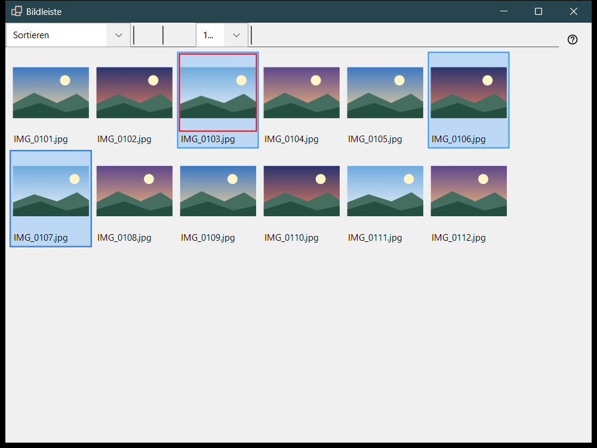
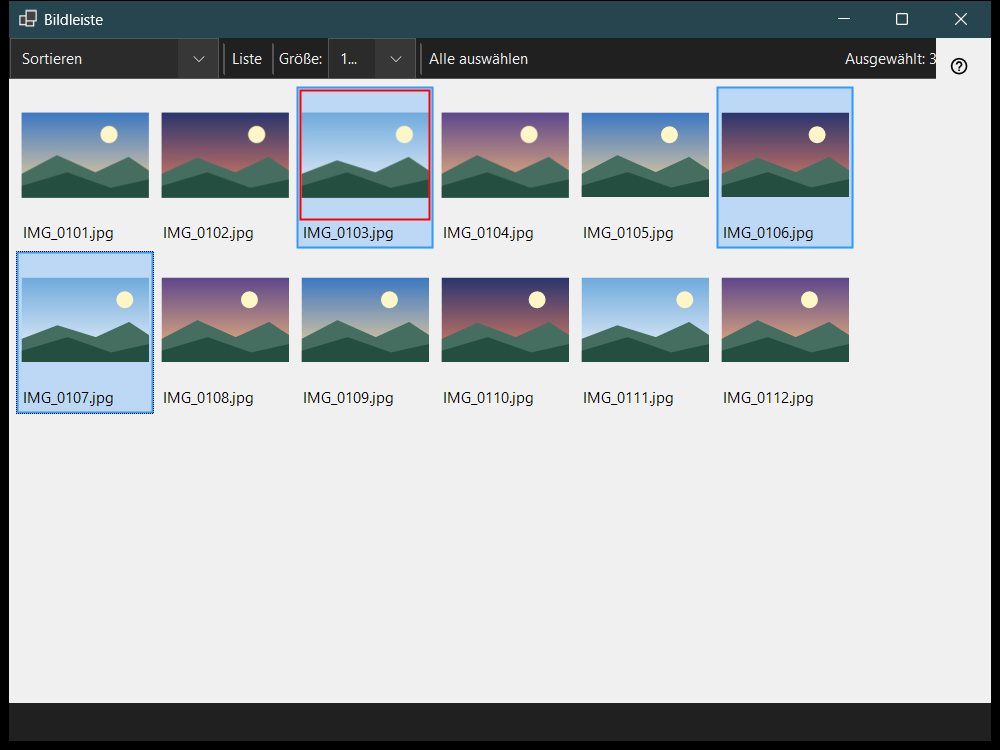

Bildleiste
Verwendungszweck
Die Bildleiste öffnet sich im Viewer mit F3 und arbeitet in zwei Modi, die im Feld «Panelmodus» gewählt werden: Sortieren, ein Raster aus Vorschaubildern des aktuellen Ordners, und Dateimanager, ein Browser mit Orten, Ordnern und Dateibefehlen. Dateien ansehen, auswählen und die Leiste schließen ändern nicht, was das Hauptfenster zeigt.


In dieser Reihenfolge
- Drücken Sie im Viewer F3.
- Wählen Sie den Modus in «Panelmodus».
- Wählen Sie Dateien aus: Klick, Shift+Klick für einen Bereich, Ctrl+Klick für eine einzelne Datei oder einen Rahmen aufziehen.
- Drücken Sie im Sortiermodus 0-9, um die Auswahl in einen Zielordner zu verschieben, oder Shift mit einer Ziffer der oberen Tastenreihe, um sie zu kopieren; Ctrl+Z macht den letzten Vorgang rückgängig.
- Doppelklicken Sie eine Datei oder drücken Sie Enter, um sie im Hauptfenster zu öffnen.
- Esc bricht einen laufenden Vorgang ab, ein weiteres Esc schließt die Leiste.
Die Elemente
Panelmodus
«Panelmodus» schaltet zwischen Sortieren und Dateimanager um. Der Sortiermodus zeigt Vorschaubilder des aktuellen Ordners zum schnellen Verschieben und Kopieren; der Dateimanager durchsucht jeden Ordner und bietet Dateibefehle.
Größe, Ansicht und Auswahl
Der Schieberegler (Größe:) legt die Größe der Vorschaubilder fest, «Kacheln» und «Liste» schalten die Ansicht um (Ctrl+L), und der Auswahlzähler zeigt, wie viele Dateien von der Gesamtzahl ausgewählt sind.
Auswählen und Sortieren
Klick wählt aus, Shift+Klick wählt einen Bereich, Ctrl+Klick schaltet eine einzelne Datei um, und Ziehen zeichnet einen Auswahlrahmen. Ctrl+A wählt alles aus, Ctrl+Shift+A hebt die Auswahl auf, Ctrl+I kehrt sie um, die Leertaste markiert eine Datei, und die Pfeiltasten, Home, End, PgUp und PgDn bewegen sich durch die Liste. Die Ziffern 0-9 verschieben die Auswahl in den Zielordner der jeweiligen Taste, Shift mit einer Ziffer der oberen Tastenreihe kopiert sie, Del löscht sie und Ctrl+Z macht den letzten Vorgang rückgängig.
Filter und ausgeblendete Dateien
Der Inhaltsfilter wählt Mediendateien, Medien und Dokumente oder Alle Dateien, und «Ausgeblendet» zeigt oder verbirgt ausgeblendete Dateien. «Einstellungen..» öffnet das Fenster Einstellungen auf der Seite Dateimanager, wo Anzeigemodus, Filter, Orte und die gemerkte Sortierung festgelegt werden.
Dateibefehle
Ctrl+C, Ctrl+X und Ctrl+V kopieren, schneiden aus und fügen ein, F2 benennt um, Ctrl+Shift+N legt einen Ordner an, Del und Shift+Del löschen die ausgewählten Elemente, und Alt+Enter zeigt die Eigenschaften. Kopieren oder Verschieben zwischen Ressourcen läuft über diesen PC.
ZIP erstellen
«ZIP erstellen» packt alle ausgewählten Ordner und Dateien in ein Archiv. Das Löschen der Originale ist standardmäßig aus und wird erst erlaubt, nachdem das Archiv geprüft und veröffentlicht wurde.
Hier entpacken
«Hier entpacken» arbeitet mit einem ausgewählten Archiv: Ordner und gewöhnliche Dateien bleiben erhalten, das ursprüngliche Archiv bleibt an seinem Platz, und entpackte Programme werden nie ausgeführt. Esc bricht den Vorgang ab.